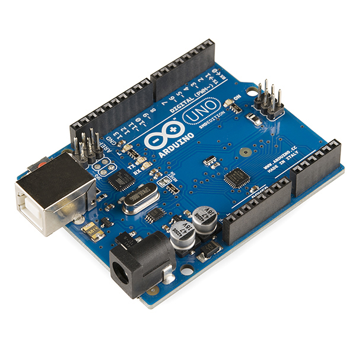
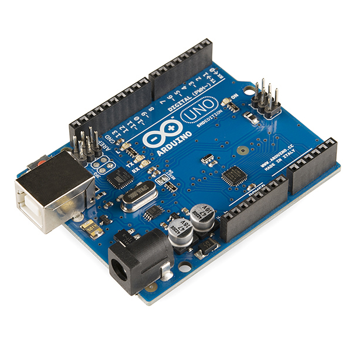

ARDUINO UNO
 

De forma estricta, el proyecto Arduino se inició en el año 2005 como un proyecto enfocado a estudiantes en el Interaction Design Institute Ivrea (IDII), de Ivrea (Italia). En aquellos años, los estudiantes usaban el microcontrolador BASIC Stamp, cuyo costo era de $100 USD, un costo considerablemente alto para un estudiante promedio.
Antes del año 2005, especíacute;ficamente durante el año 2003, Hernando Barragán había creado la plataforma de desarrollo Wiring como resultado de su proyecto de tesis en la maestría en el IDII, bajo la supervisión de Massimo Banzi y Casey Reas, quienes eran conocidos por haber trabajado en el lenguaje Processing y daban clases en el IDII.
El objetivo del proyecto era crear herramientas simples y de bajo costo para la creación de proyectos digitales por parte de personas sin altos conocimientos técnicos o sin un perfil de ingeniería.
El proyecto Wiring era una placa de desarrollo de hardware que constaba de una placa de circuito impreso (PCB) con un microcontrolador ATmega168, un Ambiente de Desarrollo Integrado (IDE) basado en funciones de procesamiento y una biblioteca de funciones para programar fácilmente el microcontrolador.
Regresando al año 2005, Massimo Banzi junto con David Mellis (otro estudiante del IDII) y David Cuartielles, agregaron soporte a Wiring para el microcontrolador ATmega8, más económico que el inicial (Atmega168).

Pero en lugar de continuar el desarrollo en Wiring, se separaron del proyecto y lo renombraron Arduino. El nombre Arduino viene de un bar en Ivrea, Italia, en donde algunos de los fundadores del proyecto Arduino solían reunirse.
El bar tiene el nombre de Bar di Re Arduino, y fue nombrado en honor a Arduino de Ivrea, quien fue el margrave de la Marca de Ivrea y Rey de Italia desde el año 1002 hasta el año 1014. El equipo inicial de Arduino estaba conformado por Massimo Banzi, David Cuartielles, Tom Igoe, Gianluca Martino y David Mellis. Hernando Barragán no fue invitado a participar.
Posteriormente el proyecto Wiring siguió adelante con placas menos densas y costosas que se distribuyeron a través de la comunidad de código abierto. Adafruit Industries, un proveedor de componentes electrónicos y fabricante de placas de circuito impreso, entre ellas placas Arduino, ubicado en la ciudad de Nueva York, estimó a mediados del año 2011 que se habían producido comercialmente más de 300 000 placas Arduino oficiales. En el año 2013, estimó que se encontraban en manos de usuarios 700,000 placas Arduino oficiales.
En octubre del año 2016, Federico Musto (actualmente ex CEO de Arduino), adquirió el 50% de la compañía tras haber adquirido las acciones de uno de los miembros fundadores del equipo. En abril del año 2017, la revista Wired informó que Musto había "fabricado su propio e xpediente académico", habiéndolo publicado en el sitio web de Arduino, cuenta personal de LinkedIn, e incluso en documentos comerciales oficiales italianos.
Musto afirmaba tener un PhD en ciencias de la computación por el Instituto Tecnológico de Massachusetts (MIT), y un MBA de la Universidad de Nueva York. La revista Wired reportó que ninguna de las universidades donde él afirmaba haber estudiado tenía registro alguno de la asistencia de Musto.
Musto afirmó más tarde, en una entrevista a Wired, que realmente nunca había obtenido los grados académicos. En el año 2017, Massimo Banzi anunció la creación de la Fundaciín Arduino, declarando que sería un nuevo comienzo para Arduino. Dicha fundación, según palabras del mismo Banzi, permitirá defender los valores fundamentales de la Comunidad Arduino dentro del ecosistema de código abierto y hacer que nuestro compromiso ( haciendo referencia a la empresa Arduini) con el código abierto sea más sólido que nunca. Sin embargo ha existido cierta incertidumbre del desarrollo actual de dicha iniciativa.La controversia en torno a Federico Musto continuó en julio del año 2017, según los informes, por haber retirado licencias de código abierto, esquemas y códigos del sitio web de Arduino, lo que provocó escrutinio y protesta por parte de la comunidad de makers.En octubre del año 2017, Arduino anunció su asociación con la multinacional ARM Holdings (ARM). El anuncio decía, en parte, que "ARM reconoce la independencia como un valor central de Arduino... sin ningún acuerdo de uso exclusivo con la arquitectura ARM". Arduino tiene la intención de seguir trabajando con todos los proveedores y arquitecturas de tecnología.Para la producción en serie de la primera versión se tomó en cuenta que el coste no fuera mayor de 30 euros, que fuera ensamblado en una placa de color azul, debía ser Plug and Play y que trabajara con todas las plataformas informáticas tales como MacOSX, Windows y GNU/Linux. Las primeras 300 unidades de Arduino se las dieron a los alumnos del Instituto IVREA, con el fin de que las probaran y empezaran a diseñar sus primeros prototipos.CREADORES
El Arduino Uno es una placa de microcontrolador de código abierto basado en el microchip ATmega328P y desarrollado por Arduino.cc. La placa está equipada con conjuntos de pines de E/S digitales y analógicas que pueden conectarse a varias placas de expansión y otros circuitos. La placa tiene 14 pines digitales, 6 pines analógicos y programables con el Arduino IDE (Entorno de desarrollo integrado) a través de un cable USB tipo B. Puede ser alimentado por el cable USB o por una batería externa de 9 voltios, aunque acepta voltajes entre 7 y 20 voltios. También es similar al Arduino Nano y Leonardo. El diseño de referencia de hardware se distribuye bajo una licencia Creative Commons Attribution Share-Alike 2.5 y está disponible en el sitio web de Arduino. Los archivos de diseño y producción para algunas versiones del hardware también están disponibles. La palabra "uno" significa en italiano lo mismo que en español, y se eligió para marcar el lanzamiento inicial del software Arduino. La placa Uno es la primera de una serie de placas Arduino basadas en USB, y la versión 1.0 del Arduino IDE fueron las versiones de referencia de Arduino, ahora evolucionadas a nuevas versiones. El ATmega328 en la placa viene preprogramado con un cargador de arranque que le permite cargar un nuevo código sin el uso de un programador de hardware externo.